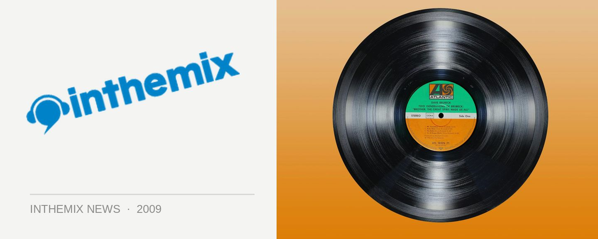

Australia's Julia Messenger joins Ferry onstage for Cream
The news that global clubbing brand Cream would be returning to Australia with Ferry Corsten has generated a fair amount of excitement this month, but there was still some mystery as to what exactly Twice In A Blue Moon: The Experience would entail. ITM can now reveal that Australian vocalist Julia Messenger will be joining the Dutch master on stage for exclusive performances in Sydney and Melbourne.
Julia will be performing her collaboration with Ferry that appeared on Twice In A Blue Moon, the sublime Black Velvet which counts as one of the album’s more downtempo highlights. But the Australian-based vocalist has a career that stretches well beyond that – dubbed as the ‘Queen of Chill’, in addition to her own solo work she’s also worked with other dance acts like Marcus Worgull and Justus Köhncke, as well as collaborating with members of Kraftwerk, Massive Attack and more.
Also joining Ferry onstage will be Betsie Larkin, as well as the promise of ‘spectacular show elements’ and an ‘unprecedented visual experience’. Bring on September we say…
Cream September tour dates:
Thu Sep 10 – Brisbane, Family
Fri Sep 11 – Melbourne, Palace Metro Theatre
Sat Sep 12 – Sydney, Hordern Pavilion
Tickets are on sale now at ITM, check out the tour trailer for Twice In A Blue Moon: The Experience below…